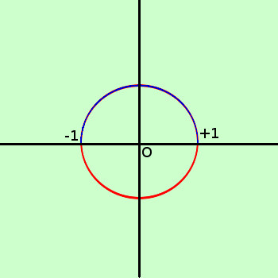

|
sviluppo Seguendo lo schema, dopo averla, se necessario, esplicitata, classificate la seguente funzione ed evidenziate intuitivamente le condizioni per l'incognita x2 + y2 = 1 prima devo esplicitare la y: porto i termine senza y dopo l'uguale y2 = 1 - x2 estraggo la radice a destra e sinistra dell'uguale ed ottengo y = +√(1 - x2) y = -√(1 - x2) sono due funzioni essendo irrazionali devo supporre che il radicando sia maggiore od uguale a zero (1 - x2) ≥0  (1 - x2) ≥ 0 → -1 ≤ x ≤ 1 per scomporre puoi utilizzare la formula della scomposizione secondo la differenza di due quadrati poi risolvere la disequazione Le due funzionin assieme formano la circonferenza di raggio 1 con centro l'origine degli assi nella figura a lato sopra in blu la funzione con il + davanti radice in rosso la funzione con il meno davanti radice in ℜ posso attribuire ad x solamente i valori compreso tra -1 ed 1 [-1;+1] |